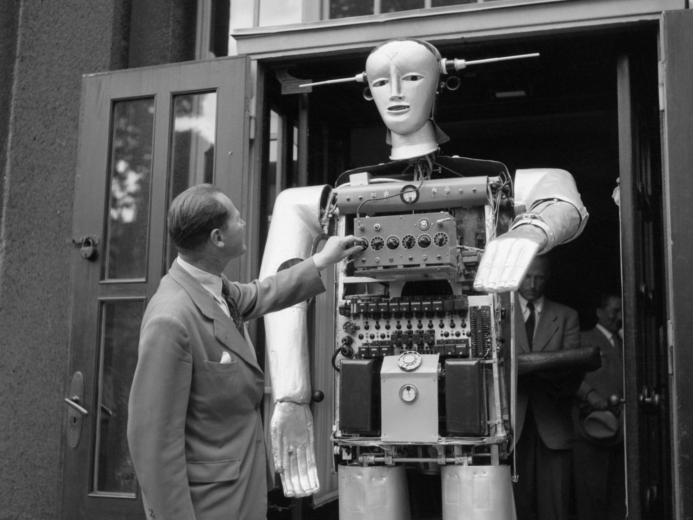
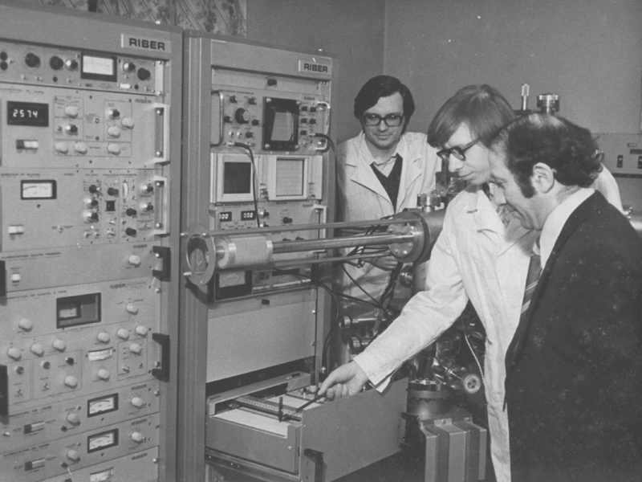

В 2014 ИИ смог решить одну из математических задач Эрдёша. Решение настолько сложное, что люди не могут его проверить — один файл с уравнением занимает 13 гигабайт.
История возникновения и развития искусственного интеллекта
Впервые термин artificial intelligence (с английского переводится как «искусственный интеллект») был упомянут в 1956 году Джоном МакКарти, основателем функционального программирования и изобретателем языка Lisp, на конференции в Университете Дартмута.
Однако сама идея подобной системы была сформирована в 1935 году Аланом Тьюрингом. Ученый дал описание абстрактной вычислительной машине, состоящей из безграничной памяти и сканера, перемещающегося вперед и назад по памяти. Однако позднее, в 1950 году, он предложил считать интеллектуальными те системы, которые в общении не будут отличаться от человека.
Тогда же Тьюринг разработал эмпирический тест для оценки машинного интеллекта. Он показывает, насколько искусственная система продвинулась в обучении общению и удастся ли ей выдать себя за человека.

Самая ранняя успешная программа искусственного интеллекта была создана Кристофером Стрейчи в 1951 году. А уже в 1952 году она играла в шашки с человеком и удивляла зрителей своими способностями предсказывать ходы. По этому поводу в 1953 году Тьюринг опубликовал статью о шахматном программировании.
В 1965 году специалист Массачусетского технологического университета Джозеф Вайценбаум разработал программу «Элиза», которая ныне считается прообразом современной Siri. В 1973 году была изобретена «Стэндфордская тележка», первый беспилотный автомобиль, контролируемый компьютером. К концу 1970-х интерес к ИИ начал спадать.
Новое развитие искусственный интеллект получил в середине 1990-х. Самый известный пример – суперкомпьютер IBM Deep Blue, который в 1997 году обыграл в шахматы чемпиона мира Гарри Каспарова. Сегодня подобные сети развиваются очень быстро за счет цифровизации информации, увеличения ее оборота и объема. Машины довольно быстро анализируют информацию и обучаются, впоследствии они действительно приобретают способности, ранее считавшиеся чисто человеческой прерогативой.
История развития искусственного интеллекта в СССР и России
Коллежский советник Семён Николаевич Корсаков (1787—1853) ставил задачу усиления возможностей разума посредством разработки научных методов и устройств, перекликающуюся с современной концепцией искусственного интеллекта, как усилителя естественного. В 1832 году С. Н. Корсаков опубликовал описание пяти изобретённых им механических устройств, так называемых «интеллектуальных машин», для частичной механизации умственной деятельности в задачах поиска, сравнения и классификации. В конструкции своих машин Корсаков впервые в истории информатики применил перфорированные карты, игравшие у него своего рода роль баз знаний, а сами машины по существу являлись предтечами экспертных систем.
В СССР работы в области искусственного интеллекта начались в 1960-х годах. В Московском университете и Академии наук был выполнен ряд пионерских исследований, возглавленных Вениамином Пушкиным и Д. А. Поспеловым.
В 1964 году была опубликована работа ленинградского логика Сергея Маслова «Обратный метод установления выводимости в классическом исчислении предикатов», в которой впервые предлагался метод автоматического поиска доказательства теорем в исчислении предикатов.
В 1966 году В. Ф. Турчиным был разработан язык рекурсивных функций Рефал.

До 1970-х годов в СССР все исследования ИИ велись в рамках кибернетики. По мнению Д. А. Поспелова, науки «информатика» и «кибернетика» были в это время смешаны, по причине ряда академических споров. Только в конце 1970-х в СССР начинают говорить о научном направлении «искусственный интеллект» как разделе информатики. При этом родилась и сама информатика, подчинив себе прародительницу «кибернетику». В конце 1970-х создаётся толковый словарь по искусственному интеллекту, трёхтомный справочник по искусственному интеллекту и энциклопедический словарь по информатике, в котором разделы «Кибернетика» и «Искусственный интеллект» входят наряду с другими разделами в состав информатики. Термин «информатика» в 1980-е годы получает широкое распространение, а термин «кибернетика» постепенно исчезает из обращения, сохранившись лишь в названиях тех институтов, которые возникли в эпоху «кибернетического бума» конца 1950-х — начала 1960-х годов. Такой взгляд на искусственный интеллект, кибернетику и информатику разделяется не всеми. Это связано с тем, что на Западе границы данных наук несколько отличаются.